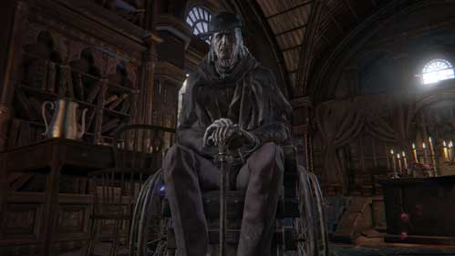

Gehrman |
|
|---|---|
|  | |
| General Info | |
| Location | Drops |
| Hunter's Dream | Old Hunter Badge |
Gehrman is an NPC in Bloodborne.
"An old hunter who welcomes and guides new hunters in the dream, what secrets does he hide?."
Gehrman Information
- Can become hostile. See Gehrman, The First Hunter page for information (massive spoilers).
- When he is not in the Hunter's Dream, a note on the ground may leave you his most relevant/last guidance.
Gehrman's Location
- Gehrman is typically found within the Workshop of the Hunter's Dream
- If Gehrman cannot be found inside the house, he can be found in the Garden behind the house; out the second door and to the right.
- He disappears after interacting with him in the Garden until next boss is defeated, although his dialogues can sometimes be triggered inside the house when he isn't present.
Dialogue
Upon first speaking with him:
Ah-hah, you must be the new hunter. Welcome to the Hunter's Dream. This will be your home, for now. I am... Gehrman, friend to you hunters. You're sure to be in a fine haze about now, but don't think too hard about all of this. Just go out and kill a few beasts. It's for your own good. You know, it's just what hunters do! You'll get used to it..."
"This was once a safe haven for hunters. A workshop where hunters used blood to enhance their weapons and flesh. We don't have as many tools as we once did, but... You're welcome to use whatever you find. (Whispers) ...Even the doll, should it please you..."
After killing Father Gascoigne:
The moon is close. It will be a long hunt tonight. If the beasts loom large, and threaten to crush your spirits, seek the Holy Chalice. As every hunter before you has. A Holy Chalice will reveal the tomb of the gods, ...where hunters partake in communion..."
"Most of the Holy Chalices lie deep within the tomb of the gods. And the few that found their way to the surface... Were lost again in the hands of men. But if the old hunter tales remain true... ...one of the Holy Chalices is worshipped in the valley hamlet. Yet the town is in disarray... It was burned and abandoned, for fear of the scourge, home now only to beasts. The perfect place for a hunter, wouldn't you say?"
Outside his house if one has 15 Insight or above and Amelia is met:
Oh, Laurence... what's taking you so long... I've grown too old for this, of little use now, I'm afraid..."
After defeating the Blood-starved Beast and recovering the Pthumeru Chalice:
The Healing Church, and the Blood Ministers who belong to it...were once guardians of the hunters, in the times of the hunter...Ludwig. They worked, and forged weapons, in their unique workshop. Today, most ministers don't recall the hunters. And so, heed the message of your forebears. Ascend to Oedon Chapel."
Outside his house after defeating Rom, The Vacuous Spider:
Oh, Laurence... Master Willem... Somebody help me... Unshackle me please, anybody... I've had enough of this dream... The night blocks all sight... Oh, somebody, please... "
After killing Mergo's Wet Nurse:
Good Hunter, you've done well, the night is near its end. Now I will show you mercy. You will die, forget the dream, and awake under the morning sun. You will be freed from this terrible Hunter's Dream."
If accepted his request:
Farewell, my keen hunter. Fear the blood."
If refused his request or attacked him at the Great Tree:
Dear, oh dear. What was it? The Hunt? The Blood? Or the horrible dream? Oh, it doesn't matter... It always comes down to the Hunter's helper to clean up after these sort of messes. Tonight, Gehrman joins the hunt..."
If killed by Gehrman:
You must accept your death, be freed from the night."
Upon Death:
The night, and the dream, were long..."
Endgame
(Warning: Contains Endgame Spoilers)
- After defeating Mergo's Wet Nurse, The Plain Doll will inform you of Gehrman's relocation. He can be found in the small sectioned-off area past the previously closed gate.
- When greeted, he will say "Good hunter, you've done well. The night is near its end. Now, I will show you mercy. You will die, forget the dream, and awake under the morning sun. You will be freed...from this terrible hunter's dream..."
- You will now be presented with 2 options. Submit Your Life or Refuse.
- If you choose Submit Your Life a cutscene will occur showing Gehrman beheading your character with his scythe, awakening you to what can only be presumed as the real Yharnam as the sun rises. The Plain Doll will then say "Farewell, good hunter. May you find your worth in the waking world. You will then unlock the Yharnam Sunrisetrophy.
- If you choose Refuse, you will fight Gehrman, the First Hunter. Upon defeating him you will obtain the Burial Blade and a cutscene will then occur showing you being embraced by an unknown entity as you then take Gehrman's place as the watcher of the Hunter's dream. You will then unlock the Honoring Wishes trophy.
- It is possible to Resist the unknown entity if you chose Refuse under a certain condition, by doing so, after confronting Gehrman, you will fight against the unknown entity (or awake anew with Bold Hunter's Mark to keep the Burial Blade and purchase Gehrman's Hunter Set without reaching the ending), once you have confronted the unknown entity, you will be reborn as the new unknown entity and embraced by the Plain Doll.
Gallery

Lore
- In time, a man named Gehrman would rise to the task of the Beast problem. Gehrman redesigned common clothing to provide better defense against the beasts' claws, and also created the Burial Blade, a unique weapon capable of transforming during battle to suit his need for a short or long weapon. Gehrman’s work was so admired that his Burial Blade would become the basis for all hunter armament technology, later known as trick weapons. Moreover, Gehrman was also a formidable fighter, whose agility would become mandatory in any hunter's fighting style.
- While it doesn’t say specifically, there is heavy implication that Gehrman was hired by the Healing Church to work in the Workshop due to his role as an inventor, since his work place is directly beneath the Healing Church’s Oedon Chapel. He worked in the Workshop presumably until his death. He took many apprentices, who all did his duty in his honor, and may well have died long ago. The bone in the workshop graveyard was one of such apprentices, who had mastered the art of Quickening, allowing him to move at incredible speeds.
- The description of the Umbilical Cord found in the Old Abandoned Workshop states "Every Great One loses its child, and then yearns for a surrogate. The Third Umbilical Cord precipitated the encounter with the pale moon, which beckoned the hunters and conceived the hunter's dream.- Abandoned Workshop". According to this umbilical cord, the Moon Presence lost its child and yearned for a surrogate. Surrogate means proxy or substitute in the dictionary. This means that Gehrman may have become the substitute child of the Moon Presence. For what purpose does the surrogate child do? It is not known yet. Why do they seek substitutes/proxies? Maybe the Great ones grieved the lost of their child and its their way of coping? Could this mean that they possess some emotions or is it for a entirely different reason? (In the French version of the game, the term "surrogate" has been translated as "substitut", which means "substitute" or "replacement" in French.)
- In the Abandoned Old Workshop, you will find an Old Hunter Bone on the grave near the house. The location and description implies that it's a grave of his apprentice who is long dead. How exactly Gehrman is still alive remains a mystery, but is most likely a result of the Moon Presence's actions. On occasion, in the Hunter's Dream, the Plain Doll will relocate to this same grave.
- Gehrman's role in the Hunter's Dream is to be an overwatcher of sorts. He, like you (depending on the ending you receive), was selected by the "Great One", the Moon Presence, as surrogate of its lost child.
- By killing Gehrman, you are essentially allowing him to be freed from the dream and his role in it, allowing him to awaken from this, "Terrible hunter's dream".
- From Gehrman's dialogue, we can assume that he suffers from a strong depression; he's been in the Hunter's Dream longer than anyone else, and has lost many good friends.
- There isn't much else to explain why the Moon Presence would want to replace Gehrman with you. It's clear that the Moon Presence requires this figure in the dream, for whatever reason. This begs the question: Was Gehrman going against the will and biddings of the Moon Presence by freeing hunters from the dream?
- Gehrman could also simply be a pawn to the Moon Presence, only able to act freely to a certain extent. He clearly isn't happy about being in the Hunter's Dream. He wants the hunter to slay the cause of the Nightmare, which s/he does by killing Mergo's Wet Nurse. The screen even says "Nightmare Slain" instead of the usual "Prey Slaughtered". It does the same after killing the Moon Presence, which implies that these two dreams are rivals. After the hunter gets rid of the other dream, the Moon Presence simply needs to get rid of you, so it orders Gehrman to kill you. This would make the hunter awake from the dream, without memory. If the hunter has used the umbilical cords, the Moon Presence tries to kill them, because they are a threat to it, a new rival. The Moon Presence seems to need a host. It does not want to replace Gehrman, but it has to if Gehrman dies.
Video:
-  MoonlightButterfly- Gehrman Dialogue
MoonlightButterfly- Gehrman Dialogue
-  Mhazard- Gehrman Battle Grunt
Mhazard- Gehrman Battle Grunt
Other Notes:
- If you "kill" Gehrman enough within Hunter's Dream he will vanish into mist and becomes unavailable until you defeated Mergo's Wet Nurse. He also disappears at a specific point in the story.
- However if you attacked Gehrman at the foot of the Great Tree, he immediately becomes hostile.
- There are more than 360 headstones in the garden where the player fights Gehrman.
- Gehrman is missing at least his right foot, and it's been replaced with a peg leg. This can be seen when he's in his wheelchair, and goes some way towards explaining his 'retirement'.
- Gehrman is voiced by Allan Corduner, who was an actor known for his portrayal as Sir Arthur Sullivan, as well as being the narrator of The Book Thief audiobook.
- Oddly enough, Corduner's portrayal as Death in The Book Thief is akin to his role in Hunter's Dream.
 Anonymous
AnonymousThat first photo of just a close up of his face is so unbelievably ugly and cursed why is it there
- Anonymous
- Anonymous
It always comes down to the Hunter's helper to clean up after these sort of messes. Tonight, Gehrman joins the hunt...
- Anonymous
the one boss in bloodborne the player actually feels sorry for
- Anonymous
- Anonymous
"Oh, Laurence... Master Willem... Somebody help me... Unshackle me please, anybody... I've had enough of this dream... The night blocks all sight... Oh, somebody, please... "
At these words, for the first time in a long time, I felt real pity and a certain sadness. I know it's a game, but in the end no one deserves such a fate. Gherman, first hunter and mentor to many good hunters. The night was long and the hunt. Now I bid you farewell. May you find your salvation in the waking world.
- Anonymous
Outside his house if one has 15 Insight or above and Amelia is met:
Oh, Laurence... what's taking you so long... I've grown too old for this, of little use now, I'm afraid..."
This just happened to me but I only had 4 insight. It was right after I loaded into the game, I last stopped in front of the Workshop and the dialogue played right after I loaded in.
- Anonymous
- Anonymous
- Anonymous
- Anonymous
- Anonymous
- Anonymous
i dont think its necessary to kill amelia for the "im too old for this" garden dialogue. i think you just need to open the 3 cathedral ward gates and have 15+ insight. i was working on eileens questline and opened all the doors (not killing amelia), and went to the dream to have her spawn in tomb of oedon (i had 16 insight) and gehrman was in the garden and gave me the dialogue. might be a glitch but i swear its happened yo me under the same conditions before too.
- Anonymous
The way I've always interoperate Gehrman's role, was that he was simply a host of the dream. As the term suggest, he is part of the source of the Hunter's Dream, working as a stasis of sorts. A key to a door. I'm pretty sure the "surrogates" are referring to woman, such as a surrogate mother. Umbilical cords are a child's connection to it's mother and the only cords you receive are from women and implied from women. The Pale Moon ushers in for new Great Ones to be born. The two cords you get from the Pale Moon are from women going into labor/post labor. The other two are implied as The Old Hunter's Bone is found at the grave is at the same grave that leads you to the Hunter's Nightmare, where you find Lady Maria who is protecting Kos' Child. So in someway, she had a connection to the Great Ones. That Umbilical Cord could have come from her. The other comes from Mergo, and Queen Yarnham has a bloodstain where her child was, as if it were snatched or visceraled out of her. Gehrman, I believe, is simply just a vessel to hold the Dream together. Maybe the goal of the Great Ones are to be reborn in a stronger vessel/form. You're told in the beginning to transcends the hunt. And some of the main themes of the game are Death, Rebirth, and Ascension. You're told to ascend to Oeden Chapel. Ascend to the Healing Church. The Hunter's Dream is a literal purgatory. What if transcend the hunt is merely you becoming the Great Ones that starts the hunt in the first place? As starting the hunt would usher in for another Great One? But to do so you need a host to guide new blood? Without the protection of the Umbilical Cords, you reject death, become the new host of the Hunter's Dream and fail to transcend.
- Anonymous
I think it's quite interesting that Gehrman, a socially awkward introvert with some... problems (he created a doll to "use" because he couldn't tell Maria what he truly felt!!), was the first person to take up arms and protect his friends. I think none of them were expecting shy Gehrman to be a damn badass.
- Anonymous
Player rejects Gehrman's offer.
Gehrman: YOU WERE MY BROTHER, ANAKIN!
- Anonymous
- Anonymous
- Anonymous
- Anonymous
- Anonymous
- Anonymous
- Anonymous
- Anonymous
No Gehrman in my Dream. I think it is a glitch, because sometimes I can hear him begging Laurenc or Willem for help, however he is not present.
- Anonymous
if bloodborn were on pc we could control those bosses with a mod or something
- Anonymous
Can you still access the abandoned workshop if you accidentally “killed” Gehrman or is his dialogue not needed to access the area?
- Anonymous
"You must accept your death, be freed from the night." So, to be freed and not simply respawn, you have to accept your death. This puts a different spin on Gehrman passing on properly. Unless he was exempt due to being bound to the dream so closely or he just couldn't resist letting go once he was slain no matter how much he wanted to save you from his torment.
- Anonymous
Anyone else notice he wears a different hat when you fight him from when you talk to him early game? Either I'm really stupid and oblivious to something or no one talks about this.
- Anonymous
“The peg leg could explain his retirement—“ I thought his peg leg had something to do with the “blood climbs the left leg” but from the Old Hunter Trousers description? I figured Gehrman, being the first Hunter in Yharnam, was the one who created this superstition, but took it a step further than double-wrapping his leg and instead amputated it himself out of precaution?
- Anonymous
- Anonymous
he can also be found sometimes the first time you enter the dream (before lighting your first lantern) and dying to the werewolf in iosefkas clinic he's asleep without dialougue
- Anonymous
Whenever I stop to read item descriptions in the Hunter's Dream, I imagine the Hunter sitting by the fire, passing Gehrman the odds and ends picked up through their travels, as Gehrman offers insight into the origins of each of these peculiar artifacts. Sometimes it's a little improbable, especially with the Umbilicals, but other descriptions read like something Gehrman would say. "Small pebbles found throughout Yharnam... Can be thrown at foes... Quite thrilling." It makes the night feel just a little more cozy.
- Anonymous
Holy shit, three years since Bloodborne's release and I've only just noticed that Gehrman makes what almost looks like the 'Make Contact' pose as he dies. A final farewell to the Moon Presence, perhaps? If that was intentional on From Software's part, then (more) kudos for attention to fine detail.
- Anonymous
why the fuck would someone need to know how many gravestones there are?
If you kill Gehrmen in the second ending, would you get the badge that he drops?
- Anonymous
If you die Last boss fight, can you refill your potions? Or Example go back and start level farming then come back?
- Anonymous
Whoa, Gehrman pulls out Shadow the hedgeog oc schyte and starts twirling around like an anime character
0/10, this is the lamest boss in the game
- Anonymous
Can his name be a reference to Walter Gilman, main character of “Dreams in the Witch House” (written by Lovecraft)?
- Anonymous
When Gherman says "tonight Gherman joins the hunt" he speaks in third person, maybe is possessed ?! Btw the doll is evil!!
- Anonymous
Just a quick note; Has anyone noticed that when Gehrman says 'it always comes down to the hunters' helper to clean up after these sort of messes,' that when he says 'hunter's helper,' he's actually referring to himself? He clearly said that line because we didn't submit. But why would he mention hunter's helper in a manner that implies himself? If anything we've been the hunter's helper all along, since he's the 1st Hunter and that we've been going where he points us for the whole game. I think the Moon Presence is the 1st Hunter and Gehrman is its helper and the technical 1st Hunter that is a human. The Moon Presence is a quick agile foe that is arguably easy to take down if you go wild. It can summon clouds that prevent use of vials and has a technique that drains nearly all your health. The more I think about it, the more it seems that the Moon Presence is an Old God that is also a hunter. When the hunt was conceived it taught Gehrman how to hunt beasts, which could explain how he got siderite to make the Burial Blade.
- Anonymous
Is it at all possible that Gehrman and the Doll are a subtle homage to Killer7 since they bear a strong similarity to Harman Smith and Samantha Sitbon?
- Anonymous
I thought it would be funny to try and recreate Gehrman with the character customization. At first it was just amusing, but as I played through I discovered that it created a whole new level of meaning. Bloodborne will never be the same for me again.
- Anonymous
Every time he attacks me I keep hearing 'suck it' and 'bam' and I find it really funny. I know he's just grunting but I can't I hear it now xD
It's funny that there is a big spoiler message under the "Endgame" section, but the information that he "can be the final boss if you refuse his offer at the end" almost at the top of this page, under "Gehrman Information" isn't labeled as a spoiler at all.
- Anonymous
Is it possible that it was Gehrman's blood that you were transfused with at the beginning? And this is why you can enter the Hunter's Dream? Because it is HIS dream? And that is how he is still alive, just like Micolash, he is INSIDE his own dream world? And the doll is someone reconstructed from his past? The final boss music has a very tragic feel to it, so I was wondering if it indicates this regression of Gehrman's character into a dream (that ironically he is trying to free you of). My other idea is that he is possessed by the alien old one things because just like Iosefka he refers to himself in the third person, has mood changes, and was slow to get his name out the first time you meet him. (His boss fight quotes: "Tonight Gehrman joins the hunt" referring to himself in third person, just like Iosefka with her Clinic.) This may indicate that he was guiding the hunter all along in order to either kill them for their power, or gather the cords for him? Especially since he seems to gain power during his boss fight from the moon (which he absorbs in a cruciform pose type of move if I recall rightly). But yeah, Vaati, ENB, or DaveControlLive'll probably figure this out more.
- Anonymous
- Anonymous
I just ate 4 Umbilical Cords then accidentally hit submit instead of refuse. The cut-scene triggered where he beheaded me, but the final fight started anyway. Anyone else got this?
- Anonymous
- Anonymous
If you use the Bold Hunter's Mark after beating the first hunter and resisting the final boss is it possible to then come back after you have left? Or do you then just fight the first hunter again being unable to resist the final boss?
- Anonymous
I keep hearing that you can find him asleep at various times. On my game, I've never seen him again after killing the blood starved beast and being told to ascend oedon chapel. I've looked for him every time I come back to the dream, but he's never there. Any hints for getting him to appear? I don't attack him or anything, so I don't understand why he doesn't reappear...
- Anonymous
I believe that the Moon Presence is the host of the dream, and Gehrman is only there to serve his purpose as a surrogate. The Moon Presence most wants other hunters brought in to fend off the nightmare whenever it comes. Moon Presence is probably perfectly fine with Gehrman releasing people from the dream because it already its "child". The moment you free Gehrman from the dream, it needs a replacement, though. As for the third ending, it makes sense that it wants you dead for the simple notion that you can't be controlled and are strong enough to kill Great Ones.
- Anonymous
It says that if he's not in the house, he's out back in the garden, but I can't find him, the only thing back there are the stump messengers
- Anonymous
I signed into my character who i logged off on while i was in the house in the hunters dream and i got some dialogue that i didnt see here, thought i should share it https://www.youtube.com/watch?v=DYUKiUAlhUY
- Anonymous
Its only me that think this guy is not gehrman but his apprentice? In the beggining, he exitates to tell his name, but says gehrman. He has no leg, and there is a bone from the gehrman apprentice inside a grave on the old workshop. I dont know, but i think this guy is not gehrman.
- Anonymous
It strikes me as odd how much in the story lines up with Demon Souls. Hear me out, they are still referring to the Gods as Old Ones. Would it not be fitting if the Maiden in Black was the host of her dream/nightmare, (Why the Old One wouldn't let her die) and Old King Allant would more or less play the role of Gerhman? In the same way we have to fight him and choose the fate of the future, just like we do here in Bloodborne. It's stated here we need dreams to communicate with the Gods. That there is indeed more than one, as seen with the school of Mensis and the Moon Presence. So what does this mean for the over-all story? I really have no idea, but i'm almost certain that the two are somehow connected.
- Anonymous
..This guy is equally cool and cheap. Be aware that the vast majority of his attacks will overwrite yours, and that late in the fight he will most likely be able to oneshot you with any two-handed attack if you have 25 vitality or less. His reach is also rather dumb, and his hitbox is pretty broken. You'll find that your weapons often slips right through him, or that his manages to connect even though you are visible out of the way of his attacks.
- Anonymous
Anyone else notice how he forgets his own name briefly? When you meet him, and he introduces himself, he pauses, as if to remember what his name is. And then when he tells you his name, his voice raises, as if he's remembered something he almost had lost. Perhaps by the time your Hunter arrives, he's beginning to lose his sense of self? -HazamaOuroborous
- Anonymous
As the title suggests. : ) I am only thinking in Freudian theory: Imagine Gehrman is trapped in the dream, can not wake up. But subconsciously he wants to. So he created/signed hunters, who suppose to be the manifestation of himself in his dream, in hope that one of the hunters would grows strong enough to kill and replace him (Gehrman). It would end his nightmare. The point is that player, is both Gehrman and the hunter he built. The purpose of this is helping him escape the hunter's dream. I have a bit more clues which supports this idea, regardless they are seemingly a bit far fetched. Please let me know if anyone is interested talk about this.
- Anonymous
So, I need to consume the Umbilicar before or after refusing his offer? If I refuse, then he killed me, am I suppose to consume those things or until I manage to defeat him?
- Anonymous
It sounds like he whispers/snores a few words before he says "Laurence, what's taking you so long..." I can't make it out though; can anyone?
- Anonymous
I still think the old hunters bone is Gehrmans right leg. It has the same affect Gehrman has when at 50% health.
- Anonymous
Pretty sure Gehrman gives you permission to f*ck the doll when he says "You're welcome to use whatever you find. (Whispers) ...Even the doll, should it please you..." so was that designed to be a specific feature? The hunters were all like "K so this doll can use blood to strengthen hunters, and other stuff." Wonder how that design meeting went.
- Anonymous
The stuff about Quickening and his weapons should be on the boss page, as he doesn't really use them when he's sitting in his chair. The mention of the Burial Blade in the lore section is fine, though.
- Anonymous
So after finding eyes in the back if the dolls's eyes (thanks to a clever camera angle, I decided to see what Gehrman had going on in his head. And while I noticed his eyes were invisible from the inside of his model...the irises of his eyes are crystalized. They refract light, and lack pupils. Not really sure what it means, but it's an interesting observation; There are a lot of hidden fine details to Bloodborne.
- Anonymous
After defeating Rom, he begs Laurence and Master Willem to save him from the Hunter's Dream. He said that in order to free yourself you had to accept your death. Does this rule not apply to Gehrman or must you be killed by another? Gehrman seems to die permanently when you kill him but could he not just kill himself? Is sacrifice/suicide not equal to accepting death?
woooo! https://www.youtube.com/watch?v=cH-jV4s8e5o advertizing level: please don't kill me. But I think this is pretty cool to share!
- Anonymous
- Anonymous
Im a big fan of his character I'll bet he was a straight up BAMF in his prime, I could only imagine how much ass he tore up.
- Anonymous
Why is Gherman normally wearing the hat that you get with the badge after you kill him but he wears a top hat during the fight with him and the refusal cutscene.
- Anonymous
When killed he will now drop a single bold hunters mark regardless of if the umbilical cords have been consumed, so you can go buy his scythe.
- Anonymous
- Anonymous
I cant find him after disappears from house, it says he garden but i looked EVERYWHERE
- Anonymous
Could it be that Lady Maria was Gherman's wife, and that she got pregnant with a great one's child and she died at birth and Gherman killed the child, so the moon presence used him as a guardian for the dream and used the doll as a surrogate and made it to resemble lady Maria as a sick joke for Gherman or that it was to help Gherman cope with her loss...
- Anonymous
- Anonymous
How long has Gehrman been trapped in the dream? A poor lonely old man so "alone" and "lonely". Gehrman wud do the doll way too much. Disgusted by his eternal lust the moon presence slices off a leg and bounds him on a wheel chair. Adds weird magic and ***** too. Try hitting the doll, white sperm will flow out of her. This must be Gehrmans raging past that desperately thirsted for company. A ritual the moon presence could no longer stomach.Gehrman tells you fo make use of the doll in the beginning. This is his last desperate attempt that you share his twisted fetish. Disappointed that you don't and his dreams of hard dashed away, he becomes more distant as the tale progresses. Disappearing more and only being seen dreaming about his lost youth.
- Anonymous
They say gherman wears un obtainable gloves I'm the final fight with him, but they look like henryks gloves, they have been bound with straps or bandages, and it looks like he wears a charred hunter set looking cape, and a top hat
- Anonymous
Is Gerhman glitched or is there a lore explanation for why he's not always visible? Because I'll sometimes load into the room and he'll be talking about when Laurence will return or some old man babble. I assumed he was in the garden but after a couple of times I've pinpointed the location the be in the room at the exact spot he usually is in after you defeat the first couple of main story bosses. What's the deal, is my game glitched? Or is he a spooky ghost?
- Anonymous
I noticed that a lot of the times when he uses the AoE he faces towards the moon.

{kind=link}
{kind=link}
if you search up his name it says gehrman- musical artist
I wonder whats songs he makes?
0
+10
-1